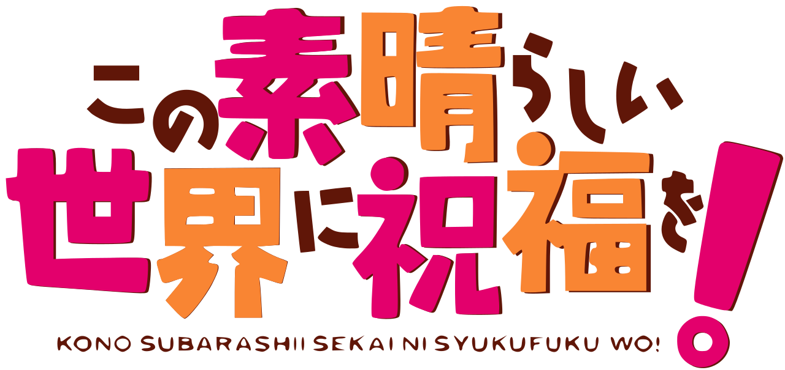
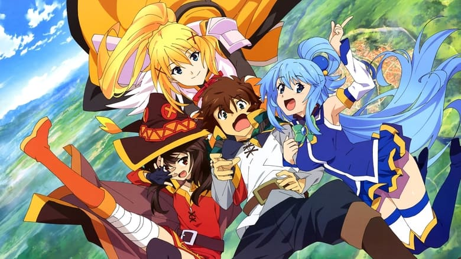
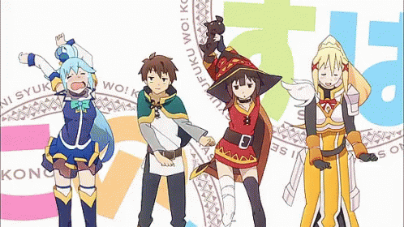
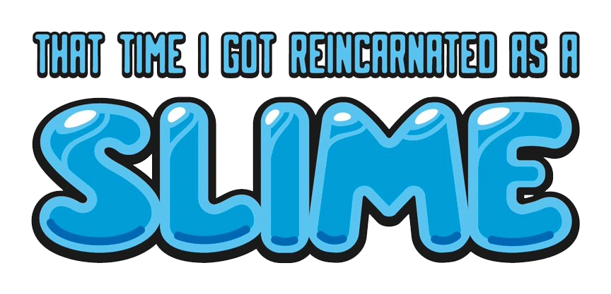
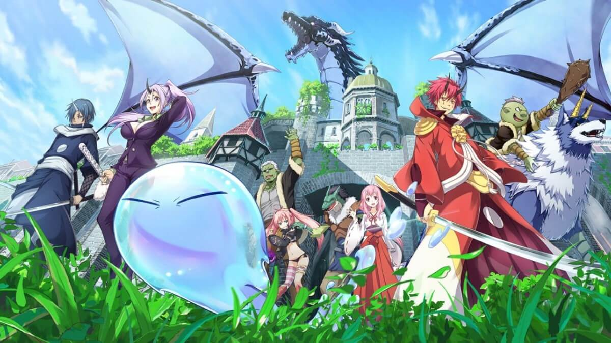
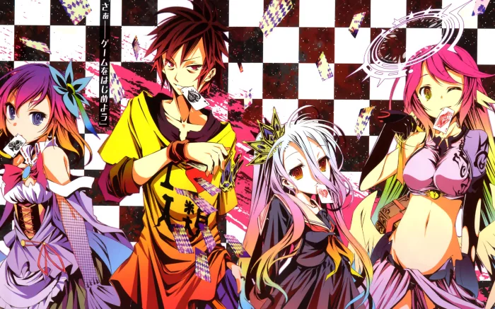
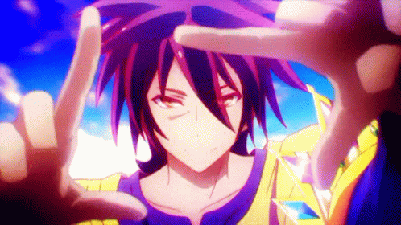

KonoSuba: God's Blessing on This Wonderful World! (Kono Subarashii Sekai ni Shukufuku wo!)
   Konosuba is a hilarious and unique isekai (another world) anime that follows a group of misfit adventurers in a comedic fantasy world.
It's known for its quirky characters, witty humor, and absurd situations.
If you enjoy satire, slapstick comedy, and fantasy settings, give it a try for a good laugh.
That Time I Got Reincarnated as a Slime (Tensei Shitara Slime Datta Ken)
  Tensura, short for "That Time I Got Reincarnated as a Slime," is a captivating isekai anime that features a protagonist who transforms into a powerful slime in a fantasy world.
With a mix of action, world-building, and a unique twist on the genre, it's a must-watch for isekai fans looking for something fresh and entertaining.
Grimgar, Ashes and Illusions (Hai to Gensou no Grimgar)
Grimgar, Ashes and Illusions is a realistic and character-driven isekai anime that explores the struggles and emotions of a group of adventurers trying to survive in a harsh fantasy world.
If you appreciate a more serious and introspective take on the isekai genre, along with beautiful artwork, give it a shot.
No Game No Life
  No Game No Life is a visually stunning isekai anime that centers on two genius siblings who are unbeatable in games.
It offers mind-bending strategies, vibrant animation, and a unique take on a world ruled by games.
If you enjoy intellectual challenges and vibrant visuals, this anime is a must-watch.